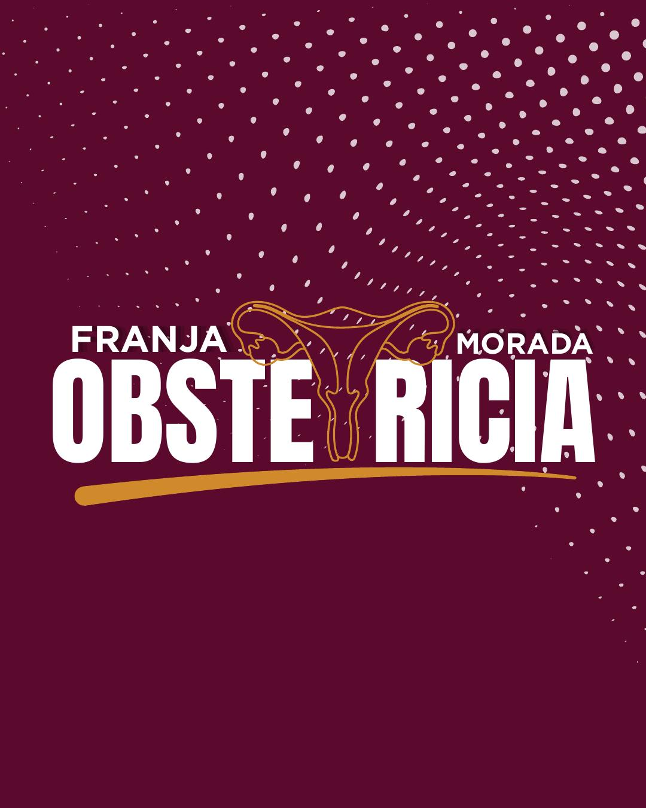

Medicina
Plan de estudio vigente publicado por la FCM, con materias, régimen, carga horaria y modalidad.
Ver plan oficialConsultá la estructura de las carreras de la Facultad y accedé al plan oficial publicado por la FCM.
Seleccioná una carrera para consultar su plan de estudio oficial.
Plan de estudio vigente publicado por la FCM, con materias, régimen, carga horaria y modalidad.
Ver plan oficial

Plan de estudio con asignaturas, carga horaria y régimen de correlatividades.
Ver plan oficial

Accedé a la información académica y materiales oficiales de la carrera.
Ver carrera